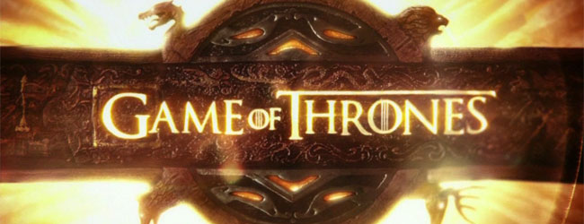

TV serija
Igra prestola (engl. Game of Thrones) amerièka je televizijska serija kablovske kuæe HBO (engl. HBO). Zasnovana je na romanima Džordža R. R. Martina iz serijala Pesma leda i vatre (engl. A Song of Ice and Fire). Tvorci serije su Dejvid Beniof i D. B. Vajs, a serija je snimana u studiju u Belfastu kao i na lokacijama u Severnoj Irskoj, Malti, Hrvatskoj, Islandu, Marokou i Škotskoj. Prva epizoda serije je premijerno prikazana u aprilu 2011. Do sada je emitovano 60 epizoda u šest sezona.
Radnja serije smeštena je na fiktivnim kontinentima Vesterosa i Esosa i prati dogaðaje èlanova nekoliko plemiækih porodica u borbi za Gvozdeni presto i vlast nad Sedam kraljevstava, kao i dolazak zime i mistiènih biæa sa severa. Serija se bavi temama kao što su socijalna hijerarhija, religija, lojalnost, seksualnost, graðanski rat i kriminal.
Igra prestola je dobila odliène kritike i pridobila je veliki broj obožavalaca. Nominovana je za Nagradu Emi za najbolju seriju za svih šest sezona, dok je 2015. i 2016. godine peta i šesta sezona dobila nagradu Emi za najbolju seriju u udarnom terminu. Pored toga je nominovana i za Zlatni globus i nagradu Hugo, dok je Piter Dinklidž 2011. i 2015. osvojio Emija za najboljeg sporednog glumca u dramskoj seriji te Zlatni globus za najboljeg sporednog glumca u seriji za ulogu Tiriona Lanistera.
U septembru 2016. godine serija Igra prestola je postala najnagraðivanija serija u istoriji.